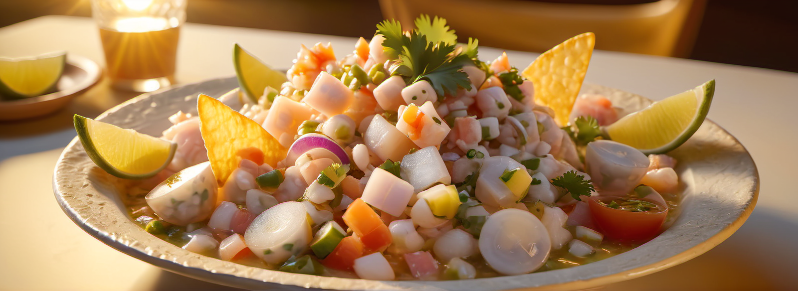

Leche de Tigre y Ceviche

Ingredientes
Leche de Tigre
- 250 ml de caldo de pescado (o agua)
- 3 cm de jengibre
- 1 rama de apio
- 1 cuarto de cebolla morada
- 1 cucharilla de ají picante
- 4 granos de pimienta de Sichuan (opcional)
- 4 tallos de cilantro
- 2 limas
Ceviche
- 8 gambas
- 1 lomo de merluza
- Hojas de cilantro
- Ají picante
- Leche de tigre
- 1 lima
- Sal
- Cebolla morada
Método
Leche de Tigre
- Separa las hojas de los tallos de cilantro. Reserva las hojas en la nevera.
- En un procesador de alimentos, añade el apio, los tallos de cilantro, el jengibre fresco, la cebolla morada, el zumo de lima, el ají picante, la pimienta sichuanesa (opcional) y el caldo de pescado (o agua).
- Tritura hasta que sea completamente líquido. Resérvala en el congelador si la vas a usar inmediatamente, o en la nevera si la usarás más tarde.
Ceviche
- Pela y limpia las gambas. Transfiérelas a un bol.
- Corta la merluza en cubos pequeños. Transfiérelas al mismo bol.
- Añade al bol dos pizcas generosas de sal, 6 hojas de cilantro picadas, y una pizca de ají picante. Mezcla todo y déjalo reposar en la nevera 15 minutos.
- Mientras, pica la cebolla morada en medios aros y ponla en agua con hielo durante 10 minutos.
- Añade al bol del pescado el jugo de una lima. Remueve todo.
- Cubre parcialmente el pescado con la leche de tigre. Remueve.
- Añade la cebolla morada. Mezcla.
- Finaliza con hojas de cilantro. Sirve inmediatamente.